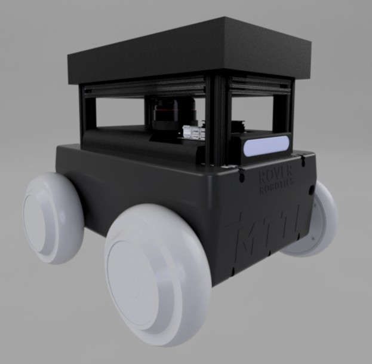
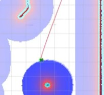
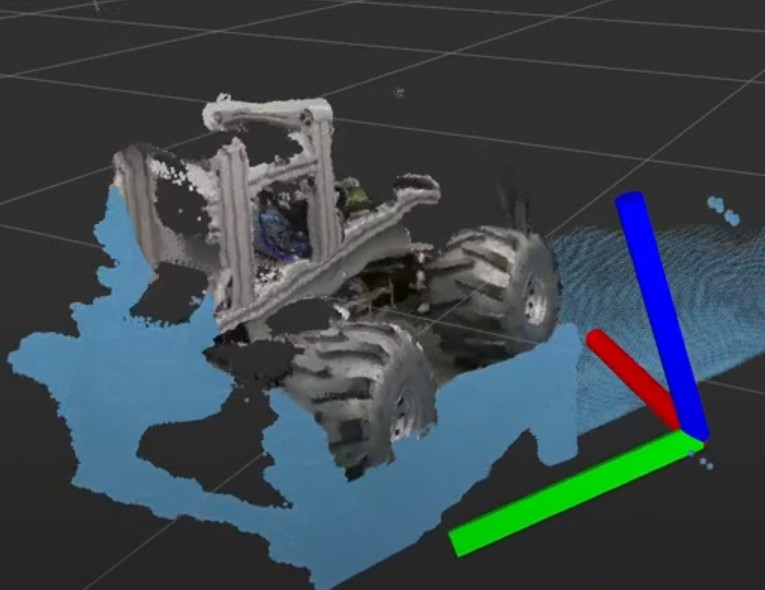

← All Projects
Automated Warehouse Delivery Rover
ROS 2 · RoboticsBuilt a fully autonomous mobile robot to transport chemical containers from a shipping and receiving room to laboratories within a research building — eliminating the need for manual delivery runs.
The navigation stack is built on ROS 2 with Nav2 for autonomous path planning and obstacle avoidance, SLAM Toolbox for simultaneous localization and mapping, and Intel RealSense cameras for depth-based perception.
The system was designed for safe operation around people, with robust stop behaviors and sensor fusion ensuring reliable performance in a dynamic real-world environment.

